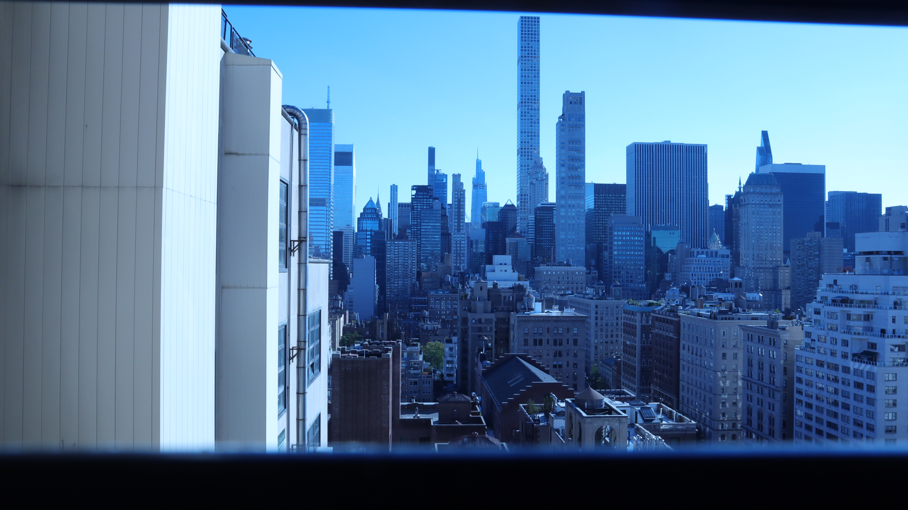

My name is Veronica Barraza, and I've lived in Brooklyn for two years since this past August.
Growing up in South Florida, I was exposed to many different cultures than included mostly
my own (Colombian), and it most definitely prepared me for New York. Broward County is
not majority affluent at all, so my peers and I grew up only hearing and imagining crowded cities
with huge skyscrapers and immense amounts of different foods you could only dream of.
Anywhere outside of the South was magical realism, an escape from what we knew. In response to our
homework prompts, I plan to include images and words that reflect and remind me of the experiences I had
growing up on the peninsula, and try to develop an understanding as to how it shaped me,
and why at times I miss my life there so much.
